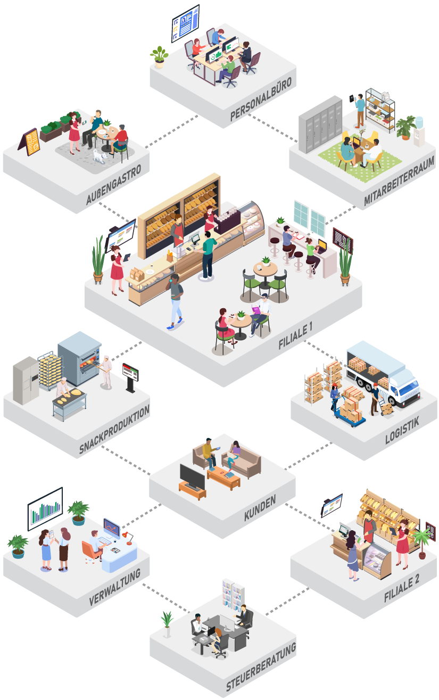
Webinar am 20.10.2026: Die digitale Bäckerei
In unserem exklusiven Webinar speziell für Bäckereien zeigen wir dir, wie du mit unserem SMART-Paket und den neuesten digitalen Funktionen deinen Betrieb zukunftssicher aufstellst.
Unternehmensprofil
UnternehmenVorstandVectron im RückblickVerschmelzung Posmatic GmbHNachhaltigkeitErfolgsstoriesKassen im VECTRON SMART Paket günstig mieten!
Familienbäckerei oder Filialbetrieb, die richtige Kassenlösung kommt von Vectron

Vectron ist seit über 30 Jahren der zuverlässige Bäckerei-Partner. Unsere Bäckerei-Kassenlösungen sind zwar vielfältig, aber für alle gilt: Sie sind leistungsstark, zuverlässig und finanzamtkonform. Sie erleichtern das Tagesgeschäft von Backstuben und Konditoreien mit Kaffee, Snacks und Backwaren - und tragen den digitalen Wandel in Buchhaltung und Warenwirtschaft. Durch unsere Erfahrung mit branchentypischer Software können wir unseren Anwendern ausgereifte und funktionale Schnittstellen zu allen relevanten Bäckerei-Softwarelösungen bieten.
Unsere Kassenlösungen haben sich in Bäckereien einen guten Ruf verdient. Wechselnde Bediener, anspruchsvolle Arbeitsumgebungen und zwölf Stunden Dauerbetrieb meistern Vectron-Kassen ebenso wie den digitalen Datenfluss zwischen angrenzenden Branchen- und Unternehmenssystemen.
02
VECTRON SMART nennt sich unser neustes Angebot für Bäckereien. Warum SMART? Weil das Komplettpaket alles enthält, was eine moderne Bäckerei braucht: Kasse, Payment, Cloud und Service.
Das ist für dich drin:
Jetzt SMART werden!

In unserem exklusiven Webinar speziell für Bäckereien zeigen wir dir, wie du mit unserem SMART-Paket und den neuesten digitalen Funktionen deinen Betrieb zukunftssicher aufstellst.
Wir freuen uns über deinen Besuch auf der Bäckerei-Messe Südback 2026. Du findest uns vom 24.-27.10.2026 auf dem Messestand D91 in Halle 10 der Messe Stuttgart. Buche dir direkt eine Termin für ein Beratungsgespräch und erhalte ein Ticket von uns.
03
Das einzigartige Komplettpaket
Bäckerei-Kassensysteme zum günstigen Preis, transparentes Payment, hilfreiche Cloud-Dienste und der beste Service vor Ort.
Jetzt kennenlernen
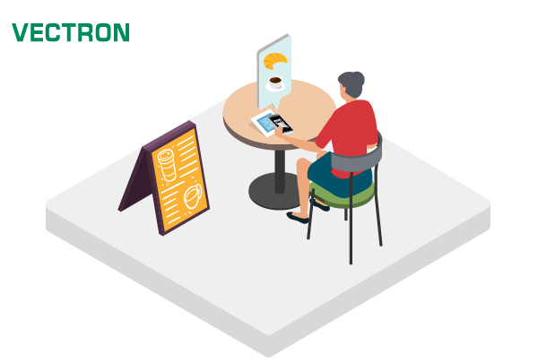
Einfach bequem bestellen
Vectrons benutzerfreundliche und effiziente Lösungen, die deine Bestellvorgänge so einfach wie möglich machen.
Mehr Informationen
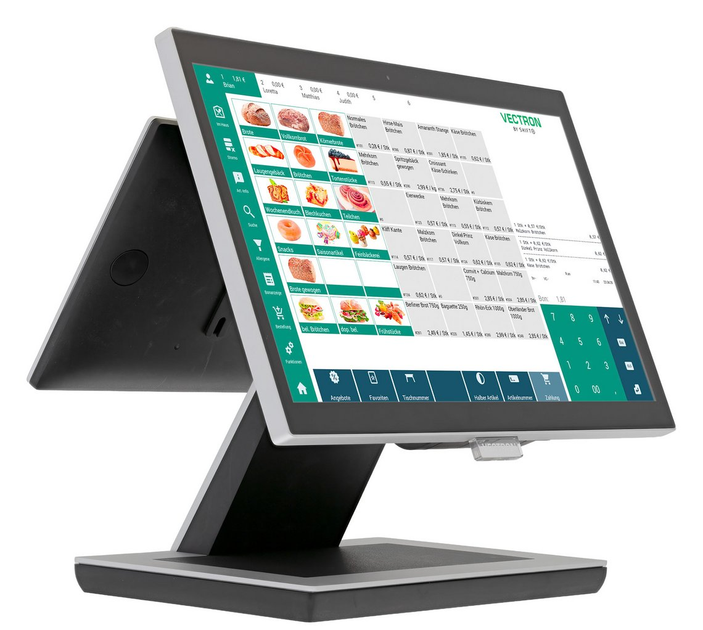
Eine Kasse für alle Fälle
Das neue Bäckerei-Kassensystem POS 8 läuft auch im Dauerbetrieb schnell und stabil. Erfahre, welche weiteren Stärken sie zur idealen Bäcker-Kasse machen.
Jetzt informieren
Die Zukunft der Bäckereien ist digital. Starte am besten schon heute mit der Digitalisierung und freu dich über mehr Umsatz und Entlastung.
Vectron bietet dir zusammen mit seinen Partnern integrierte Komplettlösungen. In unserem Produktschaubild siehst du die vielfältigen Lösungen, mit denen du deine Bäckerei stärken kannst.
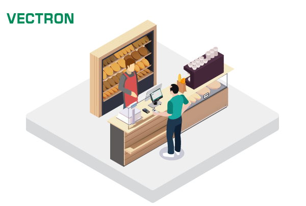
Vectron Kassensysteme sind der perfekte Begleiter für zuverlässige Abläufe in deinem Betrieb. Sie sind einfach zu bedienen, ausfallsicher durch Offlinefähigkeit und auch im flexiblen Abo-Modell erhältlich.
Nicht nur der Umwelt zuliebe: Durch den Einsatz eines Digital-Bons sparst du neben Papier auch Geld.
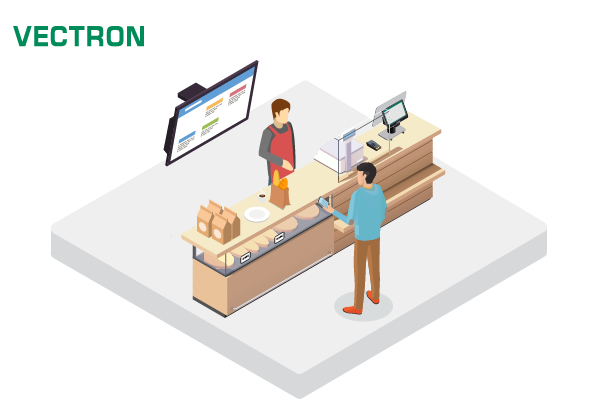
Sobald eine Bestellung fertig zubereitet ist, sieht der Gast seine Abholnummer auf dem Monitor und kann seine Artikel an der Ausgabe abholen.
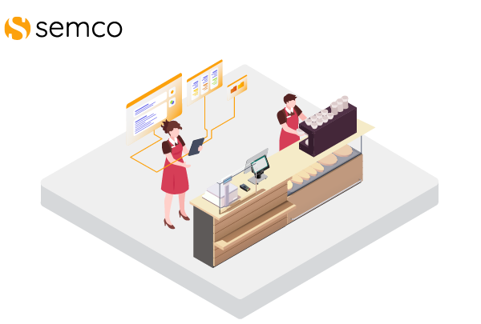
Koordiniere mit semco ORGA Aufgaben nahtlos mit Checklisten wie zum Beispiel HACCP-Checklisten, Temperaturprotokolle, Reinigungspläne, usw. … um höchste Sicherheit in Sachen Hygiene und Dokumentation zu garantieren. Das Dokumentenmanagement ermöglicht schnellen Zugriff auf wichtige Unterlagen. Außerdem bleiben durch das Infoboard alle Standorte immer auf dem Laufenden über relevante Ankündigungen und Neuigkeiten.
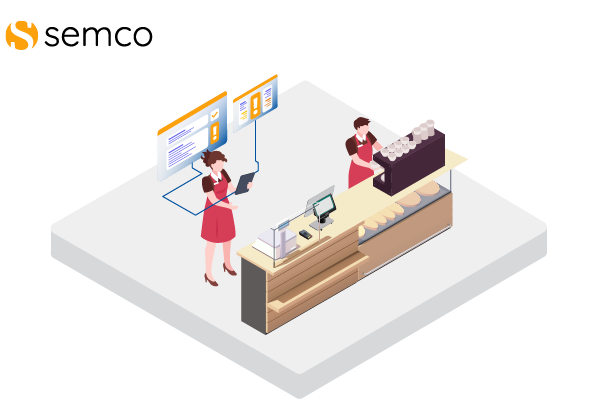
Mit semco TECH behältst du alle technischen Aufgaben und Prozesse in der Produktion und deinen Filialen im Griff. Alle relevanten Maschinen werden im System erfasst, sodass Stör- und Wartungsmeldungen mühelos dokumentiert und sofort an die zuständigen Personen weitergeleitet werden. Erleichtere deinen Technikern die Arbeit, indem sie jederzeit offene Aufgaben sowie den Zustand und die Leistung deiner Maschinen im Blick behalten können.
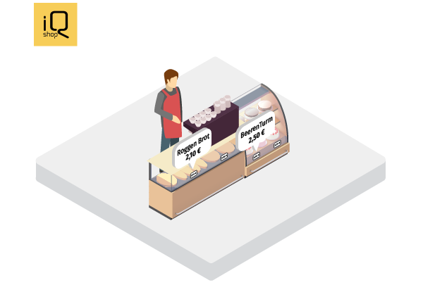
Durch die Vernetzung von Shop-IQ erlauben digitale Preisschilder unseren Kunden die dynamische und automatisierte Ausbringung von Preisen ohne zusätzliche Aufwände. Shop-IQ unterstützt in der Einrichtung und dem Design der Schilder.
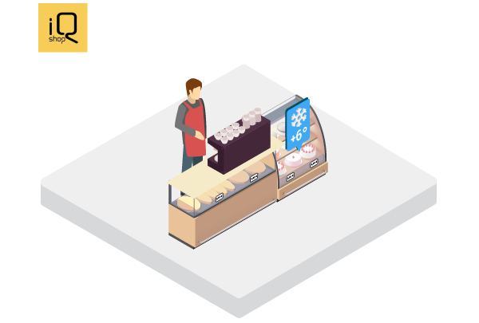
HACCP Überwachung automatisieren ? - nie wieder Temperaturen aufschreiben? Shop-IQ hilft mit seinen digitalen Helfern diese Prozesse zu automatisieren und sorgt für eine lückenlose und HACCP konforme Dokumentation.
Optimiere deinen Betrieb von der Strategie bis in die Filiale. Wir helfen dir, datenbasierte Entscheidungen zu treffen und Prozesse zu automatisieren, um Zeit zu sparen und effizienter zu werden. So behältst du die volle Kontrolle und steigerst deine Profitabilität nachhaltig.
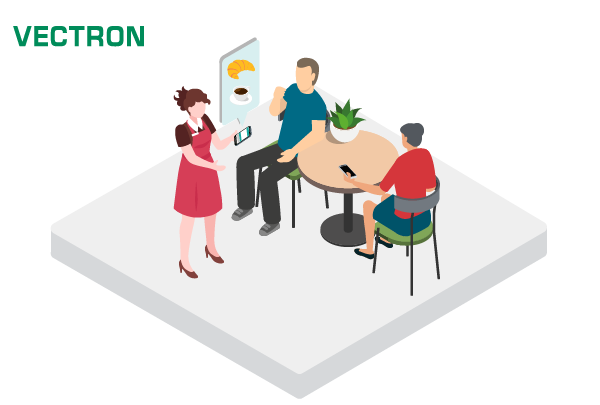
Unsere mobilen Lösungen reduzieren die Laufwege deines Personals, vereinfachen und beschleunigen Abläufe. Als Ergänzung zu deinem stationären Kassensystem steigern sie die Effizienz deines Betriebs.
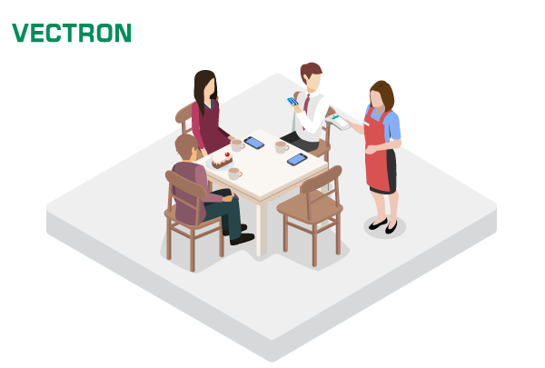
Mit unseren mobilen Payment-Lösungen sparst du Zeit und Wege. Du brauchst nur ein Gerät für die Aufnahme der Bestellung, das Kassieren und die (digitale) Bon-Ausgabe.
Moderne Ordering-Lösungen für deinen Betrieb: Bestellen und Bezahlen per QR-Code am Tisch, Online-Bestellungen über deine Website oder die Anbindung vom Lieferdienst restablo. So geht Bestellen heute!
Unsere hochpräzise Vorhersage hilft dir deine Betriebsplanung zu optimieren, Ressourcen effizient zu nutzen und rechtzeitig auf Veränderungen zu reagieren. Durch die Berücksichtigung deiner historischen Daten sowie weiterer Einflussfaktoren erhältst du schon heute dein zukünftiges Ergebnis.
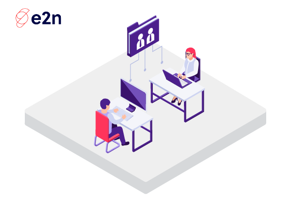
In der digitalen Personalakte verwaltest Du alle relevanten Daten zu Deinen Mitarbeitenden zentral. So reduzierst Du organisatorischen Aufwand und hast immer alles verfügbar, egal, wo Du gerade bist.
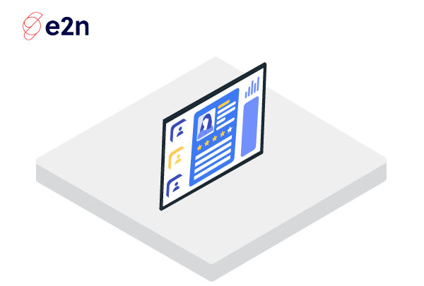
Zu den wichtigsten Kennzahlen des Gastgewerbes zählen Personaleinsatz und Produktivität. Diese Zahlen solltest Du jederzeit im Blick haben. e2n unterstützt Dich dabei und zeigt, wie sich Personaleinsatz und Umsatz verhalten, wie effizient Du geplant hast und wie Deine zukünftigen Entwicklungen aussehen.
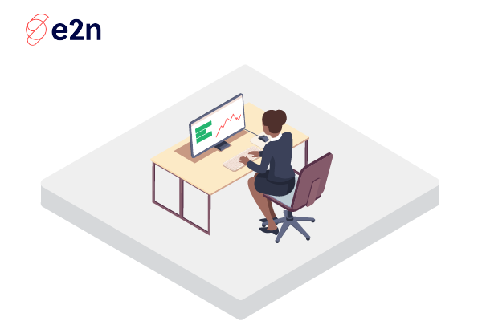
Erkenne und nutze Potenziale innerhalb des Unternehmens: Lerne von Deinen Best Practices und optimiere anhand dessen Deine Prozesse. Automatisiere außerdem Deine Schichtplanung mit Hilfe KI-gestützter Prozesse. So planst Du höchst effizient und sparst Kosten.
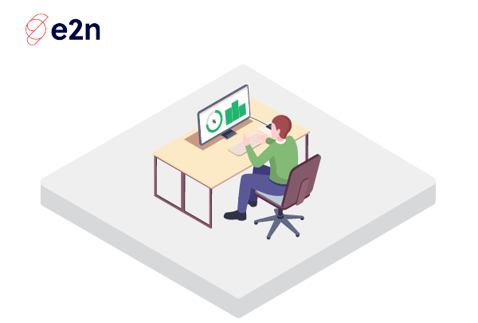
Reduziere Deinen organisatorischen Aufwand, indem Du alle relevanten Daten zu Deinen Mitarbeitenden online erfasst und zentral verwaltest. Am Ende des Monats entscheidest Du mit einem Klick, ob Überstunden für einzelne oder alle Mitarbeitenden ausbezahlt und dann ans Lohnbüro gesendet werden sollen.
Automatisiere deine Schichtplanung! Mithilfe historischer Umsatzdaten, Planzahlen und individuellen Produktivitätszielen ermitteln wir deinen Personalbedarf. Somit ermöglichen wir dir eine effiziente Personaleinsatzplanung und sparen Kosten.
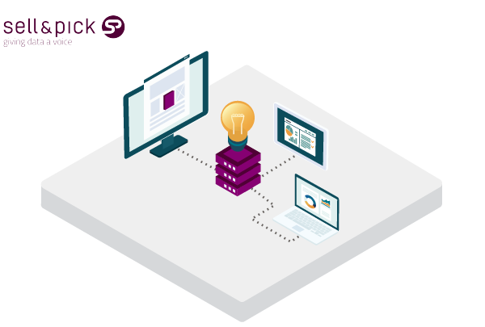
Mit unserer Lösung erkennst du schnell Defizite in der Planungskompetenz, um deine Personalplanung profitabel zu gestalten. Erhalte wertvolle Einblicke in die Effizienz deiner Mitarbeitenden und triff fundierte Entscheidungen für eine erfolgreiche Zukunft deines Unternehmens.
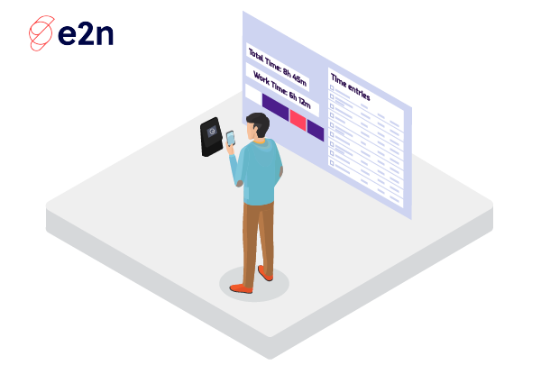
Mit einer digitalen Zeiterfassung sparst Du Zeit, senkst den administrativen Aufwand und erhältst am Ende des Monats Deine Abrechnung mit nur einem Klick.
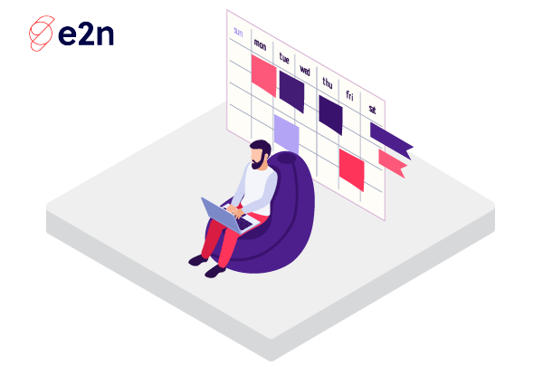
Über unsere e2n perso App sehen Mitarbeitende den Dienstplan transparent auf ihrem Smartphone. Per Push-Benachrichtigung werden sie über Änderungen informiert, die sie betreffen, und sind somit immer auf dem aktuellen Stand.
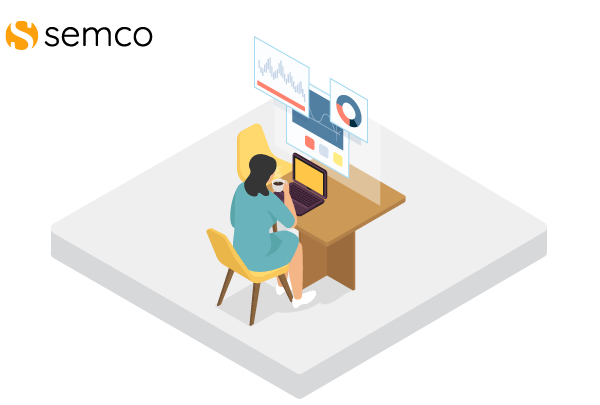
semco TEAM vereinfacht die Einarbeitung neuer Mitarbeiter/innen und stärkt deren eigenständige Problemlösungsfähigkeit durch eine digitale Wissensverwaltung. Mit gezieltem Wissensmanagement lassen sich die Lerninhalte Deiner Mitarbeiter/innen jederzeit auffrischen und nachhaltig festigen.
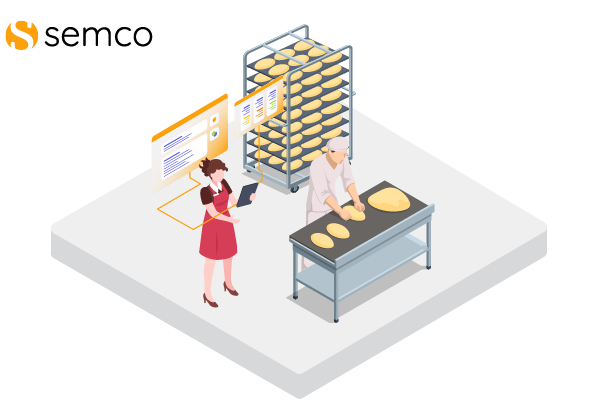
semco ORGA automatisiert wiederkehrende Aufgaben und Erinnerungen, damit nichts mehr vergessen wird! Mit integrierten HACCP-Checklisten, sowie täglichen Reinigungsplänen, Temperaturprotokollen und mehr behältst Du stets den Überblick in der Filialproduktion. So sparst Du Dir und Deinen Mitarbeiter/innen nicht nur Zeit, sondern gewinnst auch mehr Transparenz über Deine Prozesse!
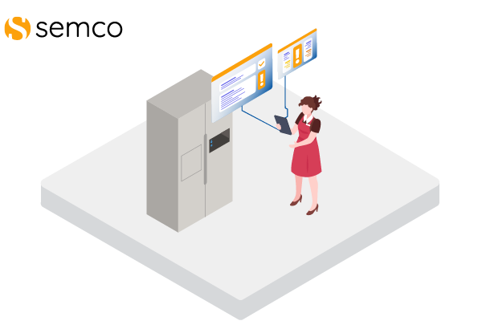
Mit semco LINK behältst Du über einen QR-Code einfach den Status aller Geräte im Blick. Störungen, Wartungen und vieles mehr können in Echtzeit gemeldet werden. Zudem erhalten Mitarbeiter so blitzschnell Infos zur Reinigung oder Bedienung, z.B. der Kaffeemaschine. Vereinfache und automatisiere so Prozesse und verwalten Inventar spielend leicht.
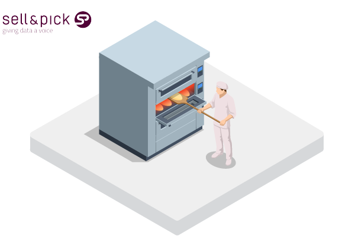
Unsere KI-basierte Lösung analysiert deine Daten und erstellt einen maßgeschneiderten Plan, damit du genau das produzierst, was deine Kunden wollen - wann sie es wollen. Spare Kosten, vermeide hohe Retouren und maximiere deine Effizienz.
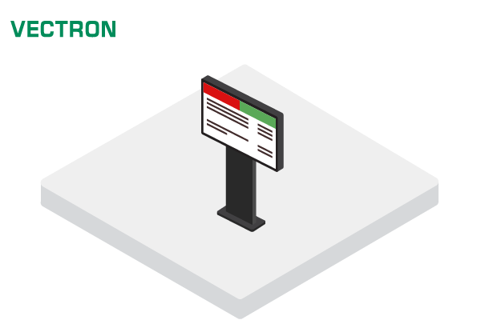
Der Snack-Monitor ist ein intelligentes Managementsystem. Bestellungen werden nicht mehr als Bon ausgedruckt, sondern smart verwaltet und direkt an der Zubereitungsstation auf einem Monitor angezeigt.
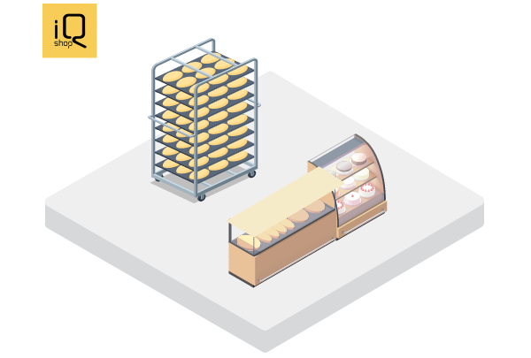
Der Frische Manager steuert die Mitarbeiter in der Filiale und sorgt für automatisierte Produktionsprozesse und Sicherstellung von Frische in der Filiale bei gleichzeitiger Reduzierung der Energiekosten und Retouren.
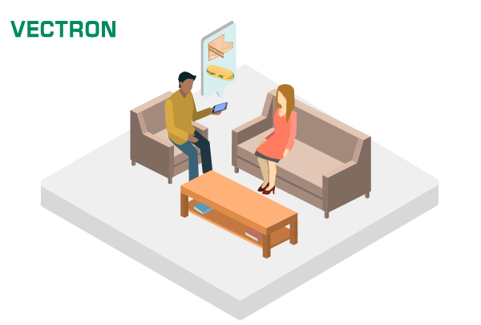
Mit Online-Bestellungen wird dein Service für Kunden noch flexibler. Sie bestellen mit ihrem Smartphone ganz bequem vom Sofa aus.
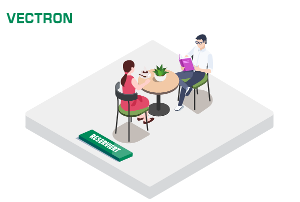
Wir haben die passende Tischreservierung für dich: einfache Lösung oder multifunktionales System. Du sparst Zeit und deine Kunden können rund um die Uhr online reservieren, z. B. im Frühstückscafé am Wochenende.
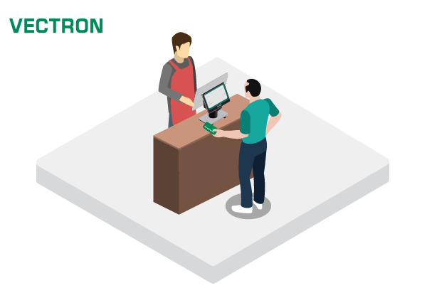
Biete deinen Kunden praktische Gutscheine an. Damit stärkst du die Kundenbindung und steigerst den Umsatz.
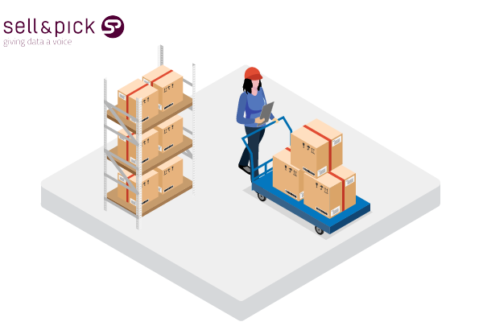
Wir liefern dir optimale Bestellvorschläge für jede Filiale und jedes Produkt, basierend auf Absatzprognosen, Lieferbedingungen, Lagerbeständen und weiteren Faktoren. So triffst du datenbasierte Entscheidungen, die dir Zeit und Geld sparen.
Erlebe volle Kontrolle über deine Produkte. Mit detaillierten Einblicken in Warengruppen, Stücklisten und Benchmarks triffst du fundierte Entscheidungen, optimierst Bestellungen und planst Produkteinführungen strategisch.
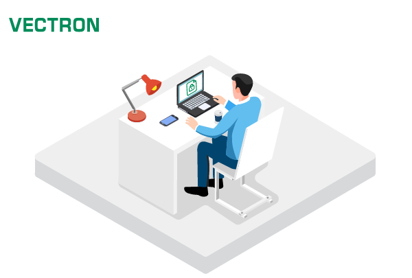
Du benötigst rückwirkend Zugriff auf Rechnungskopien mit Bewirtungsbeleg? Kein Problem! Mit dem myVectron Rechnungsarchiv hast du jederzeit Zugriff auf gespeicherte Rechnungen.
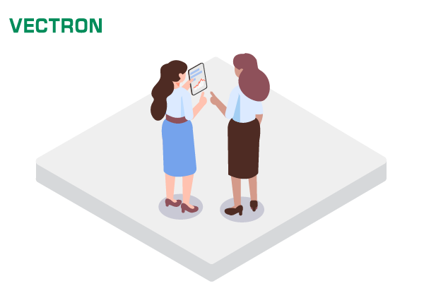
Triff dank aussagekräftiger Daten fundierte Betriebsentscheidungen. Wichtige Kennzahlen checkst du direkt in der Cloud oder mit der Reporting-App auch von unterwegs per Smartphone. Für individuelle Auswertungen werden Echtzeit-Reporting-Daten mit der BI-Schnittstelle in der Vectron-Cloud dargestellt.
zur BI-Schnittstelle
Zur Reporting-App
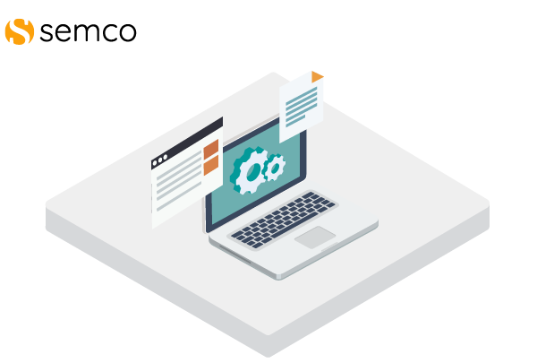
Mit semco TECH digitalisierst Du Dein Vertrags- und Wartungsmanagement und sparst dabei bares Geld. Verträge werden gezielt mit technischen Anlagen und Standorten verknüpft, während Erinnerungen sicherstellen, dass Du keine Fristen verpasst und automatische Vertragsverlängerungen zuverlässig verhinderst. Planbare Wartungen lassen sich zudem durch den integrierten Wartungsplaner automatisieren, was Dir eine optimale und effiziente Verwaltung ermöglicht.
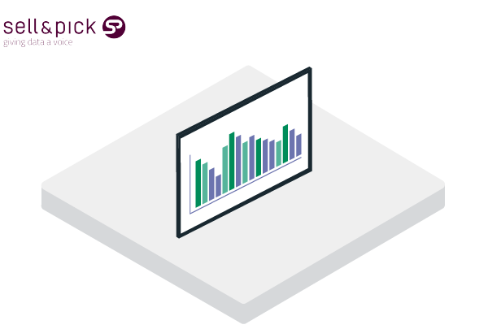
Wir brechen Daten-Silos auf, bringen deine Daten an einem Ort zusammen und verbinden Systeme mit Prozessen. Auf dieser Basis können wir Schwachstellen identifizieren, einen Plan erstellen und diesen gemeinsam in die Umsetzung und Nachhaltung bringen.
Analysiere Umsatz, Wareneinsatz und Personalkosten auf Tagesebene. So kannst du heute bereits reagieren und fundierte Entscheidungen zur Steigerung deiner Profitabilität treffen.
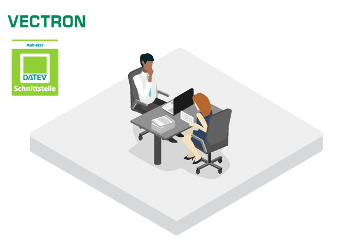
Mit der myVectron Anbindung DATEV-Kassenarchiv online werden relevante Fiskaldaten automatisch und gesetzeskonform an deinen Steuerberater weitergeleitet - ganz ohne manuellen Aufwand. Das ist so einfach wie effizient.
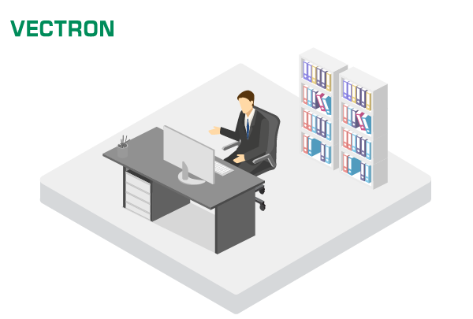
Mit dem myVectron Fiskalarchiv werden steuerrechtlich relevante Kassendaten gesetzeskonform gespeichert. Die Daten sind jederzeit abrufbar und können bei einer Betriebsprüfung heruntergeladen werden.
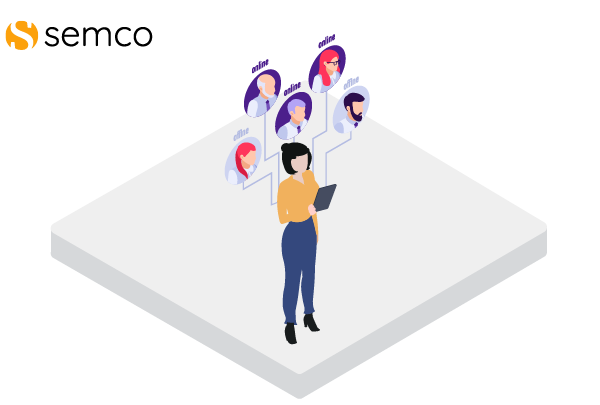
Mit semco ORGA kommunizierst Du mühelos mit Standorten über Chats, um reibungslose Abläufe zu gewährleisten. Zusätzlich dazu können wichtige Ankündigungen ad-hoc oder geplant über die Infos gezielt oder an alle Standorte verteilt werden. Wahlweise können die Infos mit einer Lesebestätigung und Antwort-Option versehen werden.
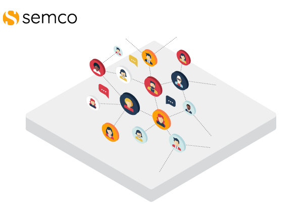
Mit Mit semco TEAM können deine Mitarbeiter/innen jederzeit auf freigegebene Unternehmensinfos, -wissen und persönliche Dokumenten in einer einzigen App zugreifen. Biete deinen Mitarbeitern die Möglichkeit, persönliche Meldungen abzusetzen.
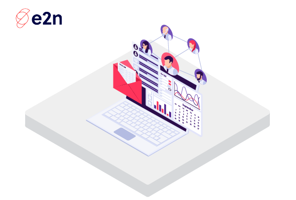
Nicht genügend Personal verfügbar? Hol Dir Hilfe und teil über den Standortwechsel in e2n Mitarbeitende aus Filiale 1 in den Dienstplan für Filiale 2 ein.
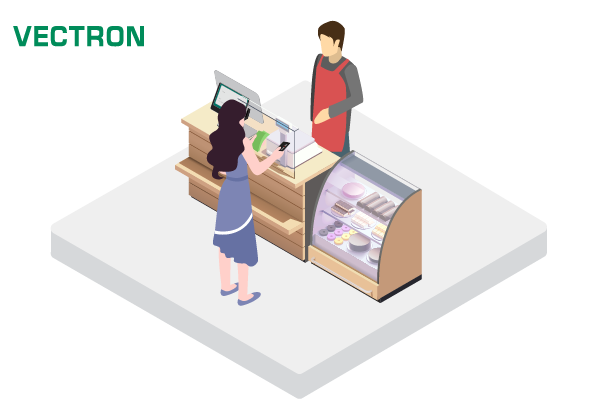
Mit bonVito wird Kundenbindung einfach und erfolgreich! Sammelprogramme, digitale Marketingkampagnen und Reporting-Tools bieten dir alle Möglichkeiten, um deine Kunden nachhaltig zu binden und zu begeistern, und das sogar filialübergreifend.
Kontrolliere deine Abverkäufe für mehr Umsatz. Gemeinsam entwickeln wir eine maßgeschneiderte Strategie und bauen eine zentrale Datenbasis auf. Durch kontinuierliche Überprüfung und Anpassung stellst du dich den Herausforderungen und schöpfst dein volles Vertriebspotenzial aus.
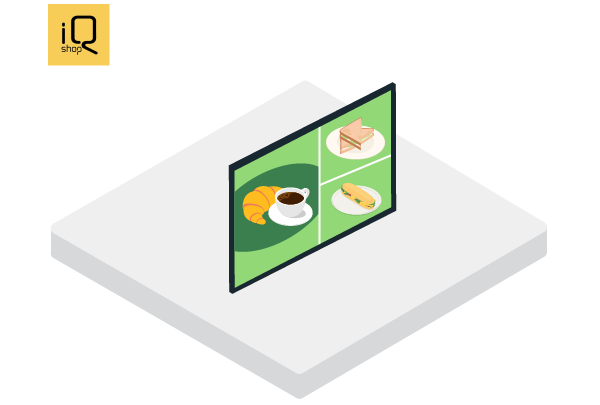
Gelungene Kundenkommunikation kann mittels ansprechender Inhalte auf professionellen Bildschirmen in der Filiale gelingen. Sie sorgt für Umsatzsteigerung und zieht neue Kunden an. SHOP-IQ sorgt für die Vernetzung mit dem Ofen und der Warenwirtschaft, sodass dem Kunden das Aktualisieren von Inhalten abgenommen wird. Egal ob Kundenstopper, Thekendisplay, Schaufensterdisplays oder klassische Menüboards. Im Shop-IQ Sortiment ist für jeden das passende dabei.
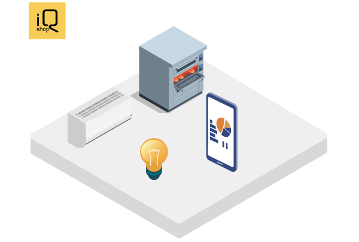
Der Energiemanager unterstützt unsere Kunden dabei, tiefere Einblicke in den Energieverbrauch ihrer Filialen zu gewinnen und diesen effektiv zu steuern. Insbesondere für die Hauptverbraucher, wie Ofen und Klimaanlage, bietet Shop-IQ spezielle Lösungen, die eine präzise Überwachung und Steuerung der Geräte ermöglichen, um den Energieverbrauch zu senken und Verbrauchsspitzen zu vermeiden.
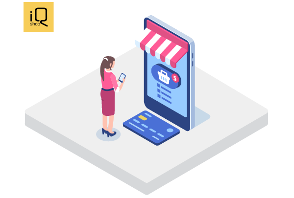
In Zeiten der Personalnot hilft der Smartstore personalreduzierte oder personallose Filialen zu betreiben. Die Gesamtlösung gibt von der Zugangskontrolle bis hin zum Überwachung dem Kunden eine Gesamtlösung aus einer Hand.
Hier kannst du dir das Webinar "BäckereiDigital - Wie du die digitale Revolution meisterst!" kostenlos ansehen.
Lerne die vielfältigen digitalen Möglichkeiten für deinen Bäckereibetrieb kennen, Kosten zu reduzieren und Effizienz zu steigern.
04
Leistungsstarke Lösungen
Deine Vorteile mit Vectron-Kassensystemen
05
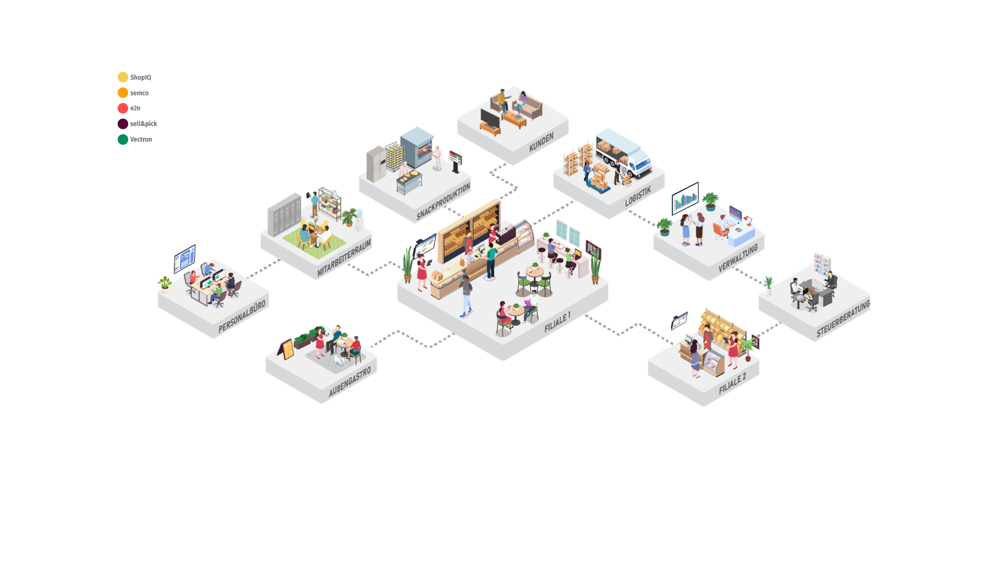
06
Volle Leistung für Kasse, Office und Fremdsysteme
Durch jahrelange Erfahrung mit der branchentypischen Softwarelandschaft, können wir unseren Anwendern ausgereifte und funktionale Schnittstellen zu allen relevanten Bäckerei-Softwarelösungen bereitstellen und bei Bedarf neue Anbindungen entwickeln.
Ob Bestellwesen, Produktionsplanung, Personaleinsatz oder Filialsteuerung, die Bäckerei-Kassenlösung von Vectron bietet digitale Anschlussmöglichkeiten an nahezu jedes gewünschte Bäckerei-Programm.
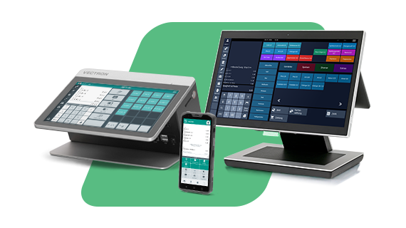
07
Vom Inhouse-Ordering haben alle etwas. Deine Gäste können einfach per Smartphone bestellen und müssen nicht auf eine Servicekraft warten. Das Serviceteam spart sich wiederum Wege und wird so entlastet. Du kannst dich schließlich darüber freuen, dass die Bestellungen direkt in deinem Bäckerei-Kassensystem erfasst werden und dass der Getränkeumsatz durch Inhouse-Ordering um 10-20% steigt. Doch nicht nur die Bestellung, sondern auch das Bezahlen kann über das Smartphone abgewickelt werden. Wie das geht, erfährst du im folgenden Video. Wenn du mehr über das Vectron Inhouse-Ordering wissen möchtest, klicke auf den Button.
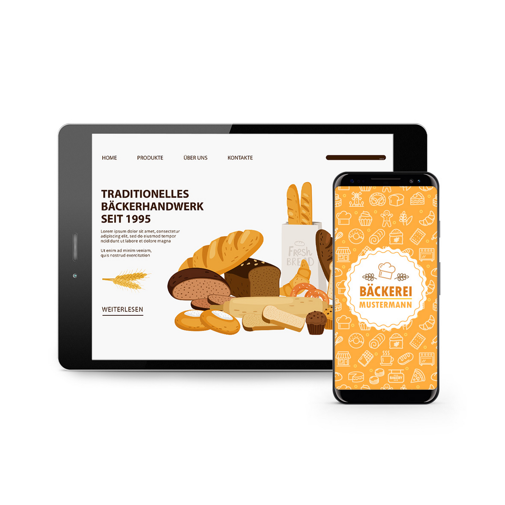
08
Erweitere deine Möglichkeiten um zahlreiche neue Maßnahmen und Optionen in deiner Filiale. Informiere deine Kunden mit Zusatzdisplays über Transaktionsdetails ebenso wie über Produkte, Aktionen oder Sonderangebote jeder Art.
Alternativ kannst du auch auf den Papierbon verzichten und den myVectron Digital-Bon direkt auf dem Kundendisplay (C100, C75, C11) als QR-Code anzeigen lassen.
Verschiedenste digitale Lösungsangebote runden unser Angebot für deine Bäckerei ab. Ergänze deine Kassensysteme mit unseren Digitalpaketen, welche unter anderem das Fiskalarchiv, die Vectron Reporting-App, den Digital-Bon, alle Kassenupdates, die DATEV-Anbindung und einen Speisekarten-Download enthalten.
Erfahren Sie mehr!
09
Bäckerei-Kassensysteme von Vectron lassen sich einfach bedienen, sind ausfallsicher sowie individuell auf deine Bedürfnisse anpassbar. Des Weiteren lassen sie sich mit zahlreichen externen Hard- und Software-Produkten verbinden. Im hektischen Bäckerei-Alltag sorgen sie somit für problemlose und sichere Abläufe.
Bäckerei-Kassensysteme aus dem Hause Vectron sind programmierbar und lassen sich auf die Bedürfnisse deines Betriebs individuell zuschneiden. Neben der individuellen Programmierung lassen sich Vectron-Kassensysteme durch zahlreiche Schnittstellen erweitern.
Unsere Kassensysteme sind für Kleinbäckereien bis hin zu großen Bäckereifilialisten geeignet. Mit unserer anpassbaren Software können wir die Kasse optimal auf deine Bedürfnisse zuschneiden.
Vectron-Kassensysteme sind ausfallsicher und offlinefähig, sodass du im Falle eines Netzausfalls die Kasse wie gewohnt nutzen kannst und Kassendaten weiterhin gespeichert werden.
Allgemeine Fragen rund um unsere Gastronomie-Produkte beantwortet dir gerne unser Support Team unter +49 251 2856200 (Mo.-Fr., 9:00 bis 17:00 Uhr) oder über unser Kontaktformular. Bei technischen Fragen kontaktiere bitte einen unserer Mitarbeiter unter +49 251 28560. Solltest du bereits Kunde sein, kann dir dein Fachhändler am besten weiterhelfen.
Ja, du kannst unsere Bäckerei-Kassen im VECTRON SMART Paket günstig mieten.
Mit unserem Angebotskonfigurator stellst du dir dein Vectron-Paket mit der gewünschten Kasse zusammen. Nach ein paar Klicks kannst du dann auch schon dein ganz persönliches Angebot anfordern.
10
Erfahrungen aus der Praxis zeigen die Vorteile der Bäckerei-Kassensysteme von Vectron.
Die Backstube Austerschmidt hält VECTRON SMART wegen der niedrigen monatlichen Kosten für Kasse und Co. für eine tolle Lösung.
Im Corner Café in Lindau erleichtert die M4 Pay das Arbeiten. Mit nur einem Gerät können Bestellaufnahme und Bezahlen erledigt werden.
Bei Böckeler trifft klassischer Service auf innovative Angebote. Das Vectron System erleichtert dort die Arbeit und beschleunigt Abläufe.
Guter Kaffee und Vectron Kassen sind zentrale Erfolgsfaktoren für die Cafés der roestbar Münster. Vectron und roestbar verbindet eine Partnerschaft, die sich bewährt hat.
Sven Schmitt hat in seinem Café Konditorei Schmitt gemeinsam mit Vectron dafür gesorgt, dass seine Kunden auch ohne Bedienung Bestellungen tätigen können.
Die Wiener Feinbäckerei wurde 1891 in Offenbach am Main gegründet. Mittlerweile wird das Familienunternehmen in fünfter Generation geführt.
Tollkötter, das ist die Handwerks-Bäckerei aus Münster. Handgefertigte Brote, aus zum Teil fast vergessenen Getreidesorten sind das Markenzeichen von Tollkötter.
Mit viel Rückenwind und 80 Gründungsmitgliedern hat hat sich die Herzstück Horgau eG gegründet. Das Konzept vereint Ökologie, Austausch und faires Wirtschaften auf Augenhöhe zwischen Verbrauchern, Landwirten, Produzenten und traditionellen Handwerkern.
Bäckermeister in zweiter Generation im gleichnamigen Familienbetrieb
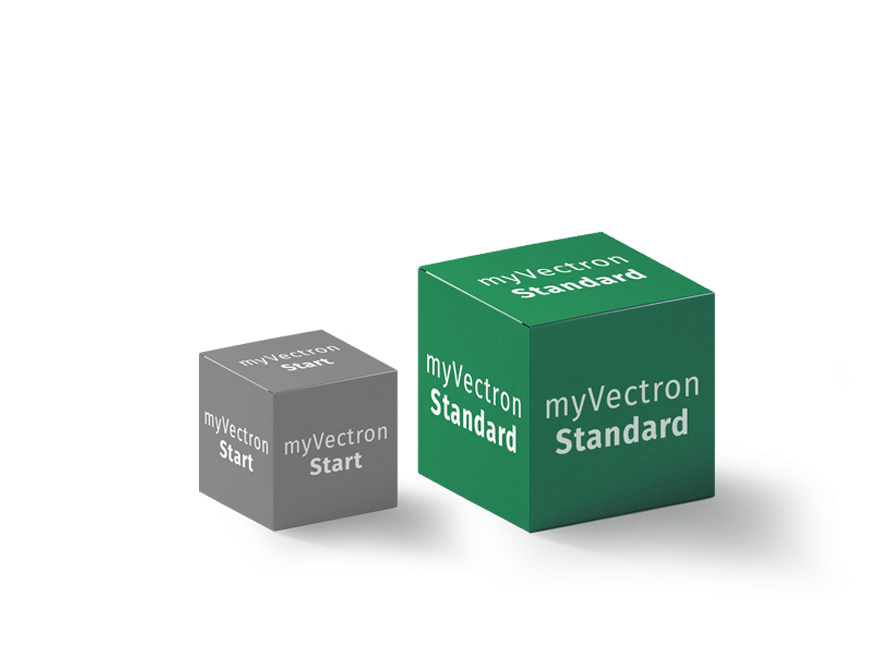